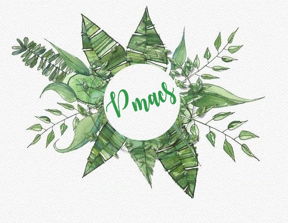

Полное название нашего проекта: «Система мониторинга и ухода за растениями» Мы больше склоняемся в исследовательскую сторону, чем в сельскохозяйственную, так, наша система может быть востребована агротехническими работниками, студентами сельскохозяйственных направленностей;
использована различными компаниями как основа для разработки своих решений в области сельского хозяйства.
Устройство разрабатывается для использования в частном порядке. Так же система может быть интересна в учебных целях для исследования влияния разнообразных климатических параметров (температура, влажность, освещенность и др.) на развитие растений.
 Разрабатываемая система для ухода за растениями может быть востребована техническими и агротехническими университетами для исследования работы со сложными техническими средствами или для исследования развития растений в искусственно созданной среде.
Система может выполнять функцию учебного объекта, на котором обучающиеся смогут оттачивать свои знания в ботанике, робототехнике, изучать программирование и проектирование различных систем. Работа возможна с людьми, техническая база которых сильно разнится: от школьников средних классов,
которые смогут изучать влияние климатических параметров на развитие растений, и заканчивая внедрением различных сложных модулей такими, как нейросети, которые сейчас стремительно набирают популярность, для спектрального анализа растений.
Данная система может использоваться различными компаниями и центрами как основа для разработки своих решений в области сельского хозяйства.
Новизной работы является разработка системы с индивидуальным подходом к каждой группе одинаковых растений. Также сведение к минимуму стоимости конечного продукта за счет минимизации используемых датчиков и распределенной системы элементов.
Также новизной проекта является разработка управляющей части и взаимодействия ее с исполняющей частью при помощи использования технологии «система на кристалле» (СнК), которая позволяет дорабатывать и дополнять существующую систему и производить собственные чипы в соответствии с результатами проектирования и маркетингового исследования.
Архитектурно заложены возможности для значительного расширения функциональности сторонними разработчиками без переписывания основного кода. Помимо этого, система отслеживает чрезвычайные ситуации и помогает устранить их. Также можно добавлять как новые функции, так и целые компоненты.
Одним из таких компонентов является система контроля влажности, которая не только может измерить уровень влажности почвы, но и изменить ее показатели с помощью полива в режиме реального времени.
Информация будет дополняться
Информация будет дополняться